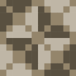
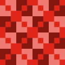
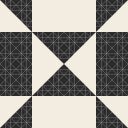
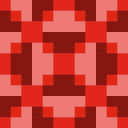

Strumenti
Gli strumenti interattivi di La Livrée d'Hermès — comporre, visualizzare, stampare, cifrare. Le pagine contrassegnate «(pagina in francese)» non sono ancora tradotte.
Altre lingue: Français · English · Español · ไทย · 简体中文 · Русский · Português · हिन्दी · Deutsch · 日本語
Creare un motivo
Componi i tuoi motivi tessili a partire dalle 60 immagini dello Yi Jing. (pagina in francese)

Magic quadricolore
I 64 motivi degli esagrammi, personalizzabili e scaricabili in alta risoluzione. (pagina in francese)

Galleria tricolore
Motivi unificati, generati dalla miscela di tinte — seleziona un motivo per vedere la sua pavimentazione. (pagina in francese)
Galleria bicolore
142 motivi bicolori generati dagli assi e chiusi sul cubo — grana di lettura, pavimentazione, esportazione. (pagina in francese)
Motivi SVG
Scarica gli strati di stampa in 4 categorie di combinazioni di tratti, in SVG. (pagina in francese)
Motivi bicolori
Componi una cella 12×12, sei livelli, ciascuno con la propria famiglia e la propria tinta. (pagina in francese)
Motivi bicolori v2
La seconda divisione delle diagonali (YA/AY), vocabolario e stati del semi-spostamento — accanto allo strumento v1. (pagina in francese)
Cimatica
La pavimentazione la cui frequenza spaziale è più vicina al suono che emetti. (pagina in francese)

Sfondo
Sfondi tessili a schermo intero, reattivi al suono o in modalità meditativa a ritmo regolabile. (pagina in francese)
Vedere la propria musica
Scegli un brano, un file o il microfono: la pagina cerca il motivo di La Livrée d’Hermès il cui spettro è più vicino a quello del suono.
Galleria di animazioni
Le animazioni delle collezioni di fondi, in sei gruppi: da guardare, visualizzare in anteprima e scaricare in MP4.
360 strati
Estrai e scarica gli strati pronti per la stampa. (pagina in francese)

Codificatore
Codifica steganografica geometrica con doppio referente, croce ansata e Jacquard. (pagina in francese)